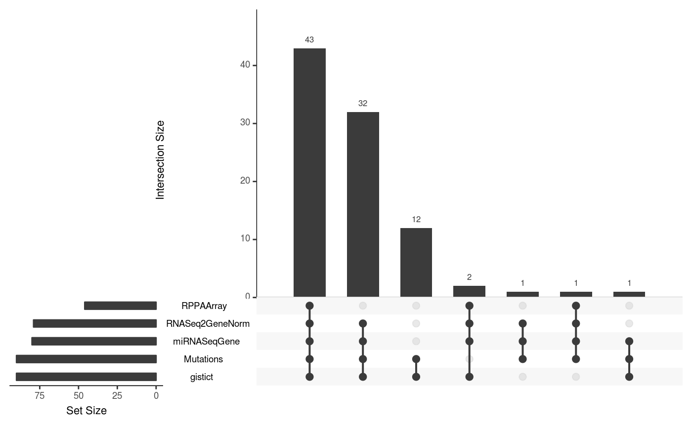
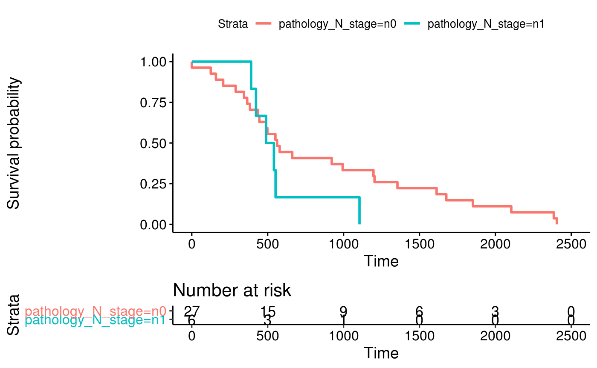

vignettes/QuickStartMultiAssay.Rmd
QuickStartMultiAssay.RmdThis quick-start guide shows key features of
MultiAssayExperiment using a subset of the TCGA
adrenocortical carcinoma (ACC) dataset. This dataset provides five
assays on 92 patients, although all five assays were not performed for
every patient:
data(miniACC)
miniACC## A MultiAssayExperiment object of 5 listed
## experiments with user-defined names and respective classes.
## Containing an ExperimentList class object of length 5:
## [1] RNASeq2GeneNorm: SummarizedExperiment with 198 rows and 79 columns
## [2] gistict: SummarizedExperiment with 198 rows and 90 columns
## [3] RPPAArray: SummarizedExperiment with 33 rows and 46 columns
## [4] Mutations: matrix with 97 rows and 90 columns
## [5] miRNASeqGene: SummarizedExperiment with 471 rows and 80 columns
## Functionality:
## experiments() - obtain the ExperimentList instance
## colData() - the primary/phenotype DataFrame
## sampleMap() - the sample coordination DataFrame
## `$`, `[`, `[[` - extract colData columns, subset, or experiment
## *Format() - convert into a long or wide DataFrame
## assays() - convert ExperimentList to a SimpleList of matrices
## exportClass() - save data to flat filesA DataFrame describing the characteristics of biological
units, for example clinical data for patients. In the prepared datasets
from The Cancer Genome
Atlas, each row is one patient and each column is a clinical,
pathological, subtype, or other variable. The $ function
provides a shortcut for accessing or setting colData
columns.
colData(miniACC)[1:4, 1:4]## DataFrame with 4 rows and 4 columns
## patientID years_to_birth vital_status days_to_death
## <character> <integer> <integer> <integer>
## TCGA-OR-A5J1 TCGA-OR-A5J1 58 1 1355
## TCGA-OR-A5J2 TCGA-OR-A5J2 44 1 1677
## TCGA-OR-A5J3 TCGA-OR-A5J3 23 0 NA
## TCGA-OR-A5J4 TCGA-OR-A5J4 23 1 423
table(miniACC$race)##
## asian black or african american white
## 2 1 78Key points: * One row per patient * Each row maps to zero or
more observations in each experiment in the ExperimentList,
below.
A base list or ExperimentList object
containing the experimental datasets for the set of samples collected.
This gets converted into a class ExperimentList during
construction.
experiments(miniACC)## ExperimentList class object of length 5:
## [1] RNASeq2GeneNorm: SummarizedExperiment with 198 rows and 79 columns
## [2] gistict: SummarizedExperiment with 198 rows and 90 columns
## [3] RPPAArray: SummarizedExperiment with 33 rows and 46 columns
## [4] Mutations: matrix with 97 rows and 90 columns
## [5] miRNASeqGene: SummarizedExperiment with 471 rows and 80 columnsKey points: * One matrix-like dataset per list element
(although they do not even need to be matrix-like, see for example the
RaggedExperiment package) * One matrix column per assayed
specimen. Each matrix column must correspond to exactly one row of
colData: in other words, you must know which patient or
cell line the observation came from. However, multiple columns can come
from the same patient, or there can be no data for that patient. *
Matrix rows correspond to variables, e.g. genes or genomic ranges *
ExperimentList elements can be genomic range-based (e.g.
SummarizedExperiment::RangedSummarizedExperiment-class or
RaggedExperiment::RaggedExperiment-class) or ID-based data
(e.g. SummarizedExperiment::SummarizedExperiment-class,
Biobase::eSet-class base::matrix-class,
DelayedArray::DelayedArray-class, and derived classes) *
Any data class can be included in the ExperimentList, as
long as it supports: single-bracket subsetting ([),
dimnames, and dim. Most data classes defined
in Bioconductor meet these requirements.
sampleMap is a graph representation of the relationship
between biological units and experimental results. In simple cases where
the column names of ExperimentList data matrices match the
row names of colData, the user won’t need to specify or
think about a sample map, it can be created automatically by the
MultiAssayExperiment constructor. sampleMap is
a simple three-column DataFrame:
assay column: the name of the assay, and found in the
names of ExperimentList list namesprimary column: identifiers of patients or biological
units, and found in the row names of colData
colname column: identifiers of assay results, and found
in the column names of ExperimentList elements Helper
functions are available for creating a map from a list. See
?listToMap
sampleMap(miniACC)## DataFrame with 385 rows and 3 columns
## assay primary colname
## <factor> <character> <character>
## 1 RNASeq2GeneNorm TCGA-OR-A5J1 TCGA-OR-A5J1-01A-11R..
## 2 RNASeq2GeneNorm TCGA-OR-A5J2 TCGA-OR-A5J2-01A-11R..
## 3 RNASeq2GeneNorm TCGA-OR-A5J3 TCGA-OR-A5J3-01A-11R..
## 4 RNASeq2GeneNorm TCGA-OR-A5J5 TCGA-OR-A5J5-01A-11R..
## 5 RNASeq2GeneNorm TCGA-OR-A5J6 TCGA-OR-A5J6-01A-31R..
## ... ... ... ...
## 381 miRNASeqGene TCGA-PA-A5YG TCGA-PA-A5YG-01A-11R..
## 382 miRNASeqGene TCGA-PK-A5H8 TCGA-PK-A5H8-01A-11R..
## 383 miRNASeqGene TCGA-PK-A5H9 TCGA-PK-A5H9-01A-11R..
## 384 miRNASeqGene TCGA-PK-A5HA TCGA-PK-A5HA-01A-11R..
## 385 miRNASeqGene TCGA-PK-A5HB TCGA-PK-A5HB-01A-11R..Key points: * relates experimental observations
(colnames) to colData * permits
experiment-specific sample naming, missing, and replicate
observations
Metadata can be used to keep additional information about patients,
assays performed on individuals or on the entire cohort, or features
such as genes, proteins, and genomic ranges. There are many options
available for storing metadata. First, MultiAssayExperiment
has its own metadata for describing the entire experiment:
metadata(miniACC)## $title
## [1] "Comprehensive Pan-Genomic Characterization of Adrenocortical Carcinoma"
##
## $PMID
## [1] "27165744"
##
## $sourceURL
## [1] "http://s3.amazonaws.com/multiassayexperiments/accMAEO.rds"
##
## $RPPAfeatureDataURL
## [1] "http://genomeportal.stanford.edu/pan-tcga/show_target_selection_file?filename=Allprotein.txt"
##
## $colDataExtrasURL
## [1] "http://www.cell.com/cms/attachment/2062093088/2063584534/mmc3.xlsx"Additionally, the DataFrame class used by
sampleMap and colData, as well as the
ExperimentList class, similarly support metadata. Finally,
many experimental data objects that can be used in the
ExperimentList support metadata. These provide flexible
options to users and to developers of derived classes.
[
In pseudo code below, the subsetting operations work on the rows of
the following indices: 1. i experimental data rows 2.
j the primary names or the column names (entered as a
list or List) 3. k assay
multiassayexperiment[i = rownames, j = primary or colnames, k = assay]Subsetting operations always return another
MultiAssayExperiment. For example, the following will
return any rows named “MAPK14” or “IGFBP2”, and remove any assays where
no rows match:
miniACC[c("MAPK14", "IGFBP2"), , ]The following will keep only patients of pathological stage iv, and all their associated assays:
stg4 <- miniACC$pathologic_stage == "stage iv"
# remove NA values from vector
miniACC[, stg4 & !is.na(stg4), ]And the following will keep only the RNA-seq dataset, and only patients for which this assay is available:
miniACC[, , "RNASeq2GeneNorm"]## Warning: 'experiments' dropped; see 'metadata'## harmonizing input:
## removing 306 sampleMap rows not in names(experiments)
## removing 13 colData rownames not in sampleMap 'primary'If any ExperimentList objects have features represented by genomic
ranges (e.g. RangedSummarizedExperiment,
RaggedExperiment), then a GRanges object in
the first subsetting position will subset these objects as in
GenomicRanges::findOverlaps().
[[
The “double bracket” method ([[) is a convenience
function for extracting a single element of the
MultiAssayExperiment ExperimentList. It avoids
the use of experiments(mae)[[1L]]. For example, both of the
following extract the ExpressionSet object containing
RNA-seq data:
miniACC[[1L]] #or equivalently, miniACC[["RNASeq2GeneNorm"]]## class: SummarizedExperiment
## dim: 198 79
## metadata(3): experimentData annotation protocolData
## assays(1): exprs
## rownames(198): DIRAS3 MAPK14 ... SQSTM1 KCNJ13
## rowData names(0):
## colnames(79): TCGA-OR-A5J1-01A-11R-A29S-07 TCGA-OR-A5J2-01A-11R-A29S-07
## ... TCGA-PK-A5HA-01A-11R-A29S-07 TCGA-PK-A5HB-01A-11R-A29S-07
## colData names(0):complete.cases() shows which patients have complete data
for all assays:
summary(complete.cases(miniACC))## Mode FALSE TRUE
## logical 49 43The above logical vector could be used for patient subsetting. More
simply, intersectColumns() will select complete cases and
rearrange each ExperimentList element so its columns
correspond exactly to rows of colData in the same
order:
accmatched = intersectColumns(miniACC)Note, the column names of the assays in accmatched are
not the same because of assay-specific identifiers, but they have been
automatically re-arranged to correspond to the same patients. In these
TCGA assays, the first three - delimited positions
correspond to patient, ie the first patient is
TCGA-OR-A5J2:
colnames(accmatched)## CharacterList of length 5
## [["RNASeq2GeneNorm"]] TCGA-OR-A5J2-01A-11R-A29S-07 ...
## [["gistict"]] TCGA-OR-A5J2-01A-11D-A29H-01 ... TCGA-PK-A5HA-01A-11D-A29H-01
## [["RPPAArray"]] TCGA-OR-A5J2-01A-21-A39K-20 ... TCGA-PK-A5HA-01A-21-A39K-20
## [["Mutations"]] TCGA-OR-A5J2-01A-11D-A29I-10 ... TCGA-PK-A5HA-01A-11D-A29I-10
## [["miRNASeqGene"]] TCGA-OR-A5J2-01A-11R-A29W-13 ...intersectRows() keeps only rows that are common to each
assay, and aligns them in identical order. For example, to keep only
genes where data are available for RNA-seq, GISTIC copy number, and
somatic mutations:
accmatched2 <- intersectRows(miniACC[, , c("RNASeq2GeneNorm",
"gistict",
"Mutations")])## Warning: 'experiments' dropped; see 'metadata'## harmonizing input:
## removing 126 sampleMap rows not in names(experiments)
rownames(accmatched2)## CharacterList of length 3
## [["RNASeq2GeneNorm"]] DIRAS3 G6PD KDR ERBB3 AKT1S1 ... RET CDKN2A MACC1 CHGA
## [["gistict"]] DIRAS3 G6PD KDR ERBB3 AKT1S1 ... PREX1 RET CDKN2A MACC1 CHGA
## [["Mutations"]] DIRAS3 G6PD KDR ERBB3 AKT1S1 ... PREX1 RET CDKN2A MACC1 CHGAThe assay and assays methods follow
SummarizedExperiment convention. The assay
(singular) method will extract the first element of the
ExperimentList and will return a matrix.
## [1] "matrix" "array"The assays (plural) method will return a
SimpleList of the data with each element being a
matrix.
assays(miniACC)## List of length 5
## names(5): RNASeq2GeneNorm gistict RPPAArray Mutations miRNASeqGeneKey point: * Whereas the [[ returned an assay
as its original class, assay() and assays()
convert the assay data to matrix form.
Slot in the MultiAssayExperiment can be accessed or set
using their accessor functions:
| Slot | Accessor |
|---|---|
ExperimentList |
experiments() |
colData |
colData() and $ * |
sampleMap |
sampleMap() |
metadata |
metadata() |
__*__ The $ operator on a
MultiAssayExperiment returns a single column of the
colData.
The longFormat or wideFormat functions will
“reshape” and combine experiments with each other and with
colData into one DataFrame. These functions
provide compatibility with most of the common R/Bioconductor functions
for regression, machine learning, and visualization.
longFormat
In long format a single column provides all assay results,
with additional optional colData columns whose values are
repeated as necessary. Here assay is the name of the
ExperimentList element, primary is the patient identifier
(rowname of colData), rowname is the assay rowname (in this
case genes), colname is the assay-specific identifier (column
name), value is the numeric measurement (gene expression, copy
number, presence of a non-silent mutation, etc), and following these are
the vital_status and days_to_death colData columns
that have been added:
longFormat(miniACC[c("TP53", "CTNNB1"), , ],
colDataCols = c("vital_status", "days_to_death"))## harmonizing input:
## removing 126 sampleMap rows not in names(experiments)## DataFrame with 518 rows and 7 columns
## assay primary rowname colname value
## <character> <character> <character> <character> <numeric>
## 1 RNASeq2GeneNorm TCGA-OR-A5J1 TP53 TCGA-OR-A5J1-01A-11R.. 563.401
## 2 RNASeq2GeneNorm TCGA-OR-A5J1 CTNNB1 TCGA-OR-A5J1-01A-11R.. 5634.467
## 3 RNASeq2GeneNorm TCGA-OR-A5J2 TP53 TCGA-OR-A5J2-01A-11R.. 165.481
## 4 RNASeq2GeneNorm TCGA-OR-A5J2 CTNNB1 TCGA-OR-A5J2-01A-11R.. 62658.391
## 5 RNASeq2GeneNorm TCGA-OR-A5J3 TP53 TCGA-OR-A5J3-01A-11R.. 956.303
## ... ... ... ... ... ...
## 514 Mutations TCGA-PK-A5HA CTNNB1 TCGA-PK-A5HA-01A-11D.. 0
## 515 Mutations TCGA-PK-A5HB TP53 TCGA-PK-A5HB-01A-11D.. 0
## 516 Mutations TCGA-PK-A5HB CTNNB1 TCGA-PK-A5HB-01A-11D.. 0
## 517 Mutations TCGA-PK-A5HC TP53 TCGA-PK-A5HC-01A-11D.. 0
## 518 Mutations TCGA-PK-A5HC CTNNB1 TCGA-PK-A5HC-01A-11D.. 0
## vital_status days_to_death
## <integer> <integer>
## 1 1 1355
## 2 1 1355
## 3 1 1677
## 4 1 1677
## 5 0 NA
## ... ... ...
## 514 0 NA
## 515 0 NA
## 516 0 NA
## 517 0 NA
## 518 0 NAwideFormat
In wide format, each feature from each assay goes in a separate column, with one row per primary identifier (patient). Here, each variable becomes a new column:
wideFormat(miniACC[c("TP53", "CTNNB1"), , ],
colDataCols = c("vital_status", "days_to_death"))## harmonizing input:
## removing 126 sampleMap rows not in names(experiments)## DataFrame with 92 rows and 9 columns
## primary vital_status days_to_death RNASeq2GeneNorm_TP53
## <character> <integer> <integer> <numeric>
## 1 TCGA-OR-A5J1 1 1355 563.401
## 2 TCGA-OR-A5J2 1 1677 165.481
## 3 TCGA-OR-A5J3 0 NA 956.303
## 4 TCGA-OR-A5J4 1 423 NA
## 5 TCGA-OR-A5J5 1 365 1169.636
## ... ... ... ... ...
## 88 TCGA-PK-A5H9 0 NA 890.866
## 89 TCGA-PK-A5HA 0 NA 683.572
## 90 TCGA-PK-A5HB 0 NA 237.370
## 91 TCGA-PK-A5HC 0 NA NA
## 92 TCGA-P6-A5OG 1 383 815.345
## RNASeq2GeneNorm_CTNNB1 gistict_TP53 gistict_CTNNB1 Mutations_TP53
## <numeric> <numeric> <numeric> <numeric>
## 1 5634.47 0 0 0
## 2 62658.39 0 1 1
## 3 6337.43 0 0 0
## 4 NA 1 0 0
## 5 5979.06 0 0 0
## ... ... ... ... ...
## 88 5258.99 0 0 0
## 89 8120.17 -1 0 0
## 90 5257.81 -1 -1 0
## 91 NA 1 1 0
## 92 6390.10 -1 1 NA
## Mutations_CTNNB1
## <numeric>
## 1 0
## 2 1
## 3 0
## 4 0
## 5 0
## ... ...
## 88 0
## 89 0
## 90 0
## 91 0
## 92 NAThe MultiAssayExperiment constructor function can take
three arguments:
experiments - An ExperimentList or
list of datacolData - A DataFrame describing the
patients (or cell lines, or other biological units)sampleMap - A DataFrame of
assay, primary, and colname
identifiersThe miniACC object can be reconstructed as follows:
MultiAssayExperiment(experiments=experiments(miniACC),
colData=colData(miniACC),
sampleMap=sampleMap(miniACC),
metadata=metadata(miniACC))## A MultiAssayExperiment object of 5 listed
## experiments with user-defined names and respective classes.
## Containing an ExperimentList class object of length 5:
## [1] RNASeq2GeneNorm: SummarizedExperiment with 198 rows and 79 columns
## [2] gistict: SummarizedExperiment with 198 rows and 90 columns
## [3] RPPAArray: SummarizedExperiment with 33 rows and 46 columns
## [4] Mutations: matrix with 97 rows and 90 columns
## [5] miRNASeqGene: SummarizedExperiment with 471 rows and 80 columns
## Functionality:
## experiments() - obtain the ExperimentList instance
## colData() - the primary/phenotype DataFrame
## sampleMap() - the sample coordination DataFrame
## `$`, `[`, `[[` - extract colData columns, subset, or experiment
## *Format() - convert into a long or wide DataFrame
## assays() - convert ExperimentList to a SimpleList of matrices
## exportClass() - save data to flat filesprepMultiAssay - Constructor function helper
The prepMultiAssay function allows the user to diagnose
typical problems when creating a MultiAssayExperiment
object. See ?prepMultiAssay for more details.
c - concatenate to MultiAssayExperiment
The c function allows the user to concatenate an
additional experiment to an existing MultiAssayExperiment.
The optional sampleMap argument allows concatenating an
assay whose column names do not match the row names of
colData. For convenience, the mapFrom argument
allows the user to map from a particular experiment
provided that the order of the
colnames is in the same. A warning will be
issued to make the user aware of this assumption. For example, to
concatenate a matrix of log2-transformed RNA-seq results:
## Warning: Assuming column order in the data provided
## matches the order in 'mapFrom' experiment(s) colnames
assays(miniACC2)## List of length 6
## names(6): RNASeq2GeneNorm gistict RPPAArray Mutations miRNASeqGene log2rnaseqWe see that 43 samples have all 5 assays, 32 are missing reverse-phase protein (RPPAArray), 2 are missing Mutations, 1 is missing gistict, 12 have only mutations and gistict, etc:
library(UpSetR)
upsetSamples(miniACC)
The colData can provide clinical data for things like a Kaplan-Meier
plot for overall survival stratified by nodal stage. To simplify things,
first add a “y” column to the colData, containing the Surv
object for survival analysis:
Note: survfit method does not
work well with DataFrame. To bypass the error, here we
covert colData to a data.frame.
suppressPackageStartupMessages({
library(survival)
library(survminer)
})
coldat <- as.data.frame(colData(miniACC))
coldat$y <- Surv(miniACC$days_to_death, miniACC$vital_status)
colData(miniACC) <- DataFrame(coldat)And remove any patients missing overall survival information:
miniACC <- miniACC[, complete.cases(coldat$y), ]
coldat <- as(colData(miniACC), "data.frame")
fit <- survfit(y ~ pathology_N_stage, data = coldat)
ggsurvplot(fit, data = coldat, risk.table = TRUE)
Choose the EZH2 gene for demonstration. This subsetting will drop assays with no row named EZH2:
wideacc <- wideFormat(miniACC["EZH2", , ],
colDataCols = c("vital_status", "days_to_death", "pathology_N_stage"))## harmonizing input:
## removing 76 sampleMap rows not in names(experiments)## DataFrame with 6 rows and 7 columns
## primary vital_status days_to_death pathology_N_stage
## <character> <integer> <integer> <character>
## 1 TCGA-OR-A5J1 1 1355 n0
## 2 TCGA-OR-A5J2 1 1677 n0
## 3 TCGA-OR-A5J4 1 423 n1
## 4 TCGA-OR-A5J5 1 365 n0
## 5 TCGA-OR-A5J7 1 490 n0
## 6 TCGA-OR-A5J8 1 579 n0
## RNASeq2GeneNorm_EZH2 gistict_EZH2 y
## <numeric> <numeric> <Surv>
## 1 75.8886 0 1355:1
## 2 326.5332 1 1677:1
## 3 NA -2 423:1
## 4 366.3826 1 365:1
## 5 747.6935 1 490:1
## 6 426.4401 1 579:1Perform a multivariate Cox regression with EZH2 copy number (gistict), log2-transformed EZH2 expression (RNASeq2GeneNorm), and nodal status (pathology_N_stage) as predictors:
coxph(Surv(days_to_death, vital_status) ~ gistict_EZH2 +
log2(RNASeq2GeneNorm_EZH2) + pathology_N_stage, data=wideacc)## Call:
## coxph(formula = Surv(days_to_death, vital_status) ~ gistict_EZH2 +
## log2(RNASeq2GeneNorm_EZH2) + pathology_N_stage, data = wideacc)
##
## coef exp(coef) se(coef) z p
## gistict_EZH2 -0.03723 0.96345 0.28205 -0.132 0.894986
## log2(RNASeq2GeneNorm_EZH2) 0.97731 2.65729 0.28105 3.477 0.000506
## pathology_N_stagen1 0.37749 1.45862 0.56992 0.662 0.507743
##
## Likelihood ratio test=16.28 on 3 df, p=0.0009942
## n= 26, number of events= 26
## (8 observations deleted due to missingness)We see that EZH2 expression is significantly associated with overal survival (p < 0.001), but EZH2 copy number and nodal status are not. This analysis could easily be extended to the whole genome for discovery of prognostic features by repeated univariate regressions over columns, penalized multivariate regression, etc.
For further detail, see the main MultiAssayExperiment vignette.
## R version 4.2.1 (2022-06-23)
## Platform: x86_64-pc-linux-gnu (64-bit)
## Running under: Ubuntu 20.04.4 LTS
##
## Matrix products: default
## BLAS: /usr/lib/x86_64-linux-gnu/openblas-pthread/libblas.so.3
## LAPACK: /usr/lib/x86_64-linux-gnu/openblas-pthread/liblapack.so.3
##
## locale:
## [1] LC_CTYPE=en_US.UTF-8 LC_NUMERIC=C
## [3] LC_TIME=en_US.UTF-8 LC_COLLATE=en_US.UTF-8
## [5] LC_MONETARY=en_US.UTF-8 LC_MESSAGES=en_US.UTF-8
## [7] LC_PAPER=en_US.UTF-8 LC_NAME=C
## [9] LC_ADDRESS=C LC_TELEPHONE=C
## [11] LC_MEASUREMENT=en_US.UTF-8 LC_IDENTIFICATION=C
##
## attached base packages:
## [1] stats4 stats graphics grDevices utils datasets methods
## [8] base
##
## other attached packages:
## [1] survminer_0.4.9 ggpubr_0.4.0
## [3] ggplot2_3.3.6 survival_3.4-0
## [5] UpSetR_1.4.0 MultiAssayExperiment_1.22.0
## [7] SummarizedExperiment_1.26.1 Biobase_2.56.0
## [9] GenomicRanges_1.48.0 GenomeInfoDb_1.32.3
## [11] IRanges_2.30.1 S4Vectors_0.34.0
## [13] BiocGenerics_0.42.0 MatrixGenerics_1.8.1
## [15] matrixStats_0.62.0 BiocStyle_2.24.0
##
## loaded via a namespace (and not attached):
## [1] ggtext_0.1.1 bitops_1.0-7 fs_1.5.2
## [4] rprojroot_2.0.3 tools_4.2.1 backports_1.4.1
## [7] bslib_0.4.0 utf8_1.2.2 R6_2.5.1
## [10] colorspace_2.0-3 withr_2.5.0 tidyselect_1.1.2
## [13] gridExtra_2.3 compiler_4.2.1 textshaping_0.3.6
## [16] cli_3.3.0 xml2_1.3.3 desc_1.4.1
## [19] DelayedArray_0.22.0 labeling_0.4.2 bookdown_0.28
## [22] sass_0.4.2 scales_1.2.1 survMisc_0.5.6
## [25] pkgdown_2.0.6 systemfonts_1.0.4 stringr_1.4.1
## [28] digest_0.6.29 rmarkdown_2.16 XVector_0.36.0
## [31] pkgconfig_2.0.3 htmltools_0.5.3 fastmap_1.1.0
## [34] highr_0.9 rlang_1.0.5 jquerylib_0.1.4
## [37] farver_2.1.1 generics_0.1.3 zoo_1.8-10
## [40] jsonlite_1.8.0 dplyr_1.0.9 car_3.1-0
## [43] RCurl_1.98-1.8 magrittr_2.0.3 GenomeInfoDbData_1.2.8
## [46] Matrix_1.4-1 Rcpp_1.0.9 munsell_0.5.0
## [49] fansi_1.0.3 abind_1.4-5 lifecycle_1.0.1
## [52] stringi_1.7.8 yaml_2.3.5 carData_3.0-5
## [55] zlibbioc_1.42.0 plyr_1.8.7 grid_4.2.1
## [58] lattice_0.20-45 splines_4.2.1 gridtext_0.1.4
## [61] knitr_1.40 pillar_1.8.1 markdown_1.1
## [64] ggsignif_0.6.3 glue_1.6.2 evaluate_0.16
## [67] data.table_1.14.2 BiocManager_1.30.18 vctrs_0.4.1
## [70] gtable_0.3.0 purrr_0.3.4 tidyr_1.2.0
## [73] km.ci_0.5-6 cachem_1.0.6 xfun_0.32
## [76] xtable_1.8-4 broom_1.0.1 rstatix_0.7.0
## [79] ragg_1.2.2 tibble_3.1.8 memoise_2.0.1
## [82] KMsurv_0.1-5 ellipsis_0.3.2